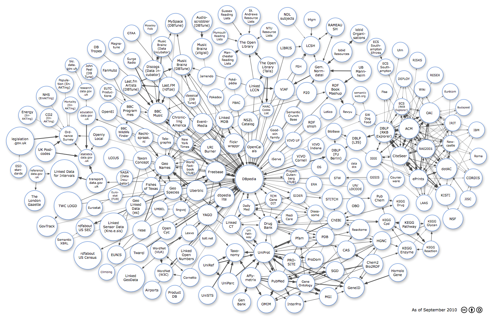

<map name="GraffleExport">
	<area shape=rect coords="1427,921,1446,940" href="http://lod-cloud.net/">
	<area shape=rect coords="1404,921,1423,940" href="http://lod-cloud.net/">
	<area shape=rect coords="1381,921,1400,940" href="http://lod-cloud.net/">
	<area shape=rect coords="1376,917,1449,943" href="http://www.rdfabout.com/demo/census/">
	<area shape=poly coords="292,737,292,796,233,796,233,737,292,737" href="http://www.rdfabout.com/demo/census/">
	<area shape=circle coords="473,339,30" href="http://www.bbc.co.uk/music">
	<area shape=circle coords="389,331,30" href="http://www.bbc.co.uk/programmes">
	<area shape=circle coords="371,395,24" href="http://www.bbc.co.uk/wildlifefinder/">
	<area shape=circle coords="1000,393,24" href="http://data.bibbase.org">
	<area shape=circle coords="751,833,30" href="http://affymetrix.bio2rdf.org">
	<area shape=circle coords="1038,750,27" href="http://cas.bio2rdf.org">
	<area shape=circle coords="1008,660,27" href="http://chebi.bio2rdf.org">
	<area shape=circle coords="724,906,27" href="http://genbank.bio2rdf.org">
	<area shape=circle coords="1061,863,30" href="http://geneid.bio2rdf.org">
	<area shape=circle coords="916,850,27" href="http://go.bio2rdf.org">
	<area shape=circle coords="1144,722,27" href="http://hgnc.bio2rdf.org">
	<area shape=circle coords="1192,818,27" href="http://homologene.bio2rdf.org">
	<area shape=circle coords="882,912,27" href="http://interpro.bio2rdf.org">
	<area shape=circle coords="1159,665,24" href="http://cpd.bio2rdf.org">
	<area shape=circle coords="1201,609,24" href="http://dr.bio2rdf.org">
	<area shape=circle coords="1220,750,27" href="http://ec.bio2rdf.org">
	<area shape=circle coords="1295,669,24" href="http://gl.bio2rdf.org">
	<area shape=circle coords="1227,673,30" href="http://kegg.bio2rdf.org">
	<area shape=circle coords="1291,747,24" href="http://rn.rkbexplorer.com/">
	<area shape=circle coords="984,890,27" href="http://mgi.bio2rdf.org">
	<area shape=circle coords="1066,617,27" href="http://obo.bio2rdf.org">
	<area shape=circle coords="798,912,27" href="http://omim.bio2rdf.org">
	<area shape=circle coords="974,710,27" href="http://pdb.bio2rdf.org">
	<area shape=circle coords="898,714,27" href="http://pfam.bio2rdf.org">
	<area shape=circle coords="942,778,27" href="http://prodom.bio2rdf.org">
	<area shape=circle coords="874,786,27" href="http://prosite.bio2rdf.org">
	<area shape=circle coords="1138,594,27" href="http://pubchem.bio2rdf.org">
	<area shape=circle coords="833,843,30" href="http://pubmed.bio2rdf.org">
	<area shape=circle coords="1077,688,30" href="http://reactome.bio2rdf.org">
	<area shape=circle coords="1004,812,27" href="http://sgd.bio2rdf.org">
	<area shape=circle coords="791,757,30" href="http://uniprot.bio2rdf.org">
	<area shape=circle coords="704,758,27" href="http://taxonomy.bio2rdf.org">
	<area shape=circle coords="683,849,30" href="http://uniparc.bio2rdf.org">
	<area shape=circle coords="745,701,20" href="http://unipathway.bio2rdf.org">
	<area shape=circle coords="625,795,30" href="http://uniref.bio2rdf.org">
	<area shape=circle coords="622,886,27" href="http://unists.bio2rdf.org">
	<area shape=circle coords="215,194,20" href="http://education.data.gov.uk/">
	<area shape=circle coords="1117,793,30" href="http://chem2bio2rdf.org">
	<area shape=circle coords="537,363,30" href="http://chroniclingamerica.loc.gov/about/api/">
	<area shape=circle coords="569,832,27" href="http://www2.let.vu.nl/oz/cltl/cornetto/">
	<area shape=poly coords="222,491,222,550,163,550,163,491,222,491" href="http://www.epimorphics.com/web/wiki/using-interval-set-uris-statistical-data">
	<area shape=circle coords="319,816,24" href="http://climb.dataincubator.org/">
	<area shape=circle coords="458,211,30" href="http://discogs.dataincubator.org/">
	<area shape=circle coords="450,81,20" href="http://moseley.dataincubator.org/">
	<area shape=circle coords="485,139,30" href="http://musicbrainz.dataincubator.org/">
	<area shape=circle coords="373,533,24" href="http://nasa.dataincubator.org/">
	<area shape=circle coords="455,870,27" href="http://airports.dataincubator.org/">
	<area shape=circle coords="645,290,24" href="http://pokedex.dataincubator.org/">
	<area shape=poly coords="776,507,776,565,717,565,717,507,776,507" href="http://dbpedia.org/">
	<area shape=circle coords="671,591,30" href="http://dbpedialite.org/">
	<area shape=circle coords="288,146,27" href="http://dbtropes.org/">
	<area shape=circle coords="392,255,30" href="http://dbtune.org/artists/last-fm/">
	<area shape=circle coords="605,63,30" href="http://dbtune.org/last-fm/">
	<area shape=circle coords="575,296,24" href="http://dbtune.org/classical/">
	<area shape=circle coords="267,213,24" href="http://dbtune.org/bbc/peel/">
	<area shape=circle coords="349,135,24" href="http://dbtune.org/magnatune/">
	<area shape=circle coords="545,193,30" href="http://dbtune.org/musicbrainz/">
	<area shape=circle coords="525,69,30" href="http://dbtune.org/myspace/">
	<area shape=circle coords="1061,495,20" href="http://data.dcs.shef.ac.uk/">
	<area shape=circle coords="957,212,30" href="http://wiki.d-nb.de/display/LDS">
	<area shape=circle coords="1155,200,24" href="http://id.ecs.soton.ac.uk/docs/">
	<area shape=circle coords="259,346,27" href="http://education.data.gov.uk/">
	<area shape=circle coords="146,353,27" href="http://co2emission.psi.enakting.org/">
	<area shape=circle coords="82,345,27" href="http://energy.psi.enakting.org/">
	<area shape=circle coords="210,314,24" href="http://mortality.psi.enakting.org/">
	<area shape=circle coords="138,288,30" href="http://nhs.psi.enakting.org/">
	<area shape=circle coords="192,250,27" href="http://population.psi.enakting.org/">
	<area shape=circle coords="55,509,24" href="http://standards.esd.org.uk/">
	<area shape=circle coords="348,764,27" href="http://eunis.eea.europa.eu">
	<area shape=circle coords="282,622,24" href="http://ec.europa.eu/eurostat/ramon/rdfdata/">
	<area shape=circle coords="323,275,24" href="http://www.bedlamtheatre.co.uk/">
	<area shape=circle coords="606,370,30" href="http://eventmedia.cwi.nl/">
	<area shape=circle coords="329,210,27" href="http://fanhu.bz">
	<area shape=circle coords="452,559,27" href="http://data.fishesoftexas.org">
	<area shape=circle coords="700,431,30" href="http://www4.wiwiss.fu-berlin.de/flickrwrappr">
	<area shape=circle coords="646,515,30" href="http://freebase.com/">
	<area shape=circle coords="739,622,24" href="http://www4.wiwiss.fu-berlin.de/dailymed/">
	<area shape=circle coords="1007,462,30" href="http://www4.wiwiss.fu-berlin.de/dblp/">
	<area shape=circle coords="945,639,24" href="http://www4.wiwiss.fu-berlin.de/diseasome/">
	<area shape=circle coords="804,676,27" href="http://www4.wiwiss.fu-berlin.de/drugbank/">
	<area shape=circle coords="345,587,20" href="http://www4.wiwiss.fu-berlin.de/eurostat/">
	<area shape=circle coords="867,651,24" href="http://www4.wiwiss.fu-berlin.de/medicare/">
	<area shape=circle coords="873,529,24" href="http://www4.wiwiss.fu-berlin.de/gutendata/">
	<area shape=circle coords="893,587,24" href="http://www4.wiwiss.fu-berlin.de/sider/">
	<area shape=circle coords="995,597,30" href="http://www4.wiwiss.fu-berlin.de/stitch/">
	<area shape=circle coords="393,98,24" href="http://data.beeldengeluid.nl/gtaa/GTAA">
	<area shape=circle coords="407,619,30" href="http://geo.linkeddata.es/">
	<area shape=circle coords="493,496,30" href="http://www.geonames.org/ontology/">
	<area shape=circle coords="518,570,27" href="http://lod.geospecies.org/">
	<area shape=circle coords="1123,531,24" href="http://lod.gesis.org/">
	<area shape=circle coords="140,678,30" href="http://www.govtrack.us">
	<area shape=circle coords="743,365,30" href="http://nektar.oszk.hu/wiki/Semantic_web">
	<area shape=circle coords="828,477,24" href="http://iserve.kmi.open.ac.uk/">
	<area shape=circle coords="619,228,27" href="http://dbtune.org/jamendo/">
	<area shape=circle coords="824,400,24" href="http://www.johngoodwin.me.uk/family/.html">
	<area shape=poly coords="369,651,369,710,310,710,310,651,369,651" href="http://wiki.knoesis.org/index.php/SSW_Datasets">
	<area shape=circle coords="1068,420,30" href="http://dblp.l3s.de">
	<area shape=circle coords="931,136,27" href="http://id.loc.gov/authorities/">
	<area shape=circle coords="568,699,24" href="http://www.lexvo.org">
	<area shape=circle coords="857,143,27" href="http://libris.kb.se">
	<area shape=circle coords="542,628,24" href="http://www.lingvoj.org/">
	<area shape=circle coords="558,764,30" href="http://km.aifb.kit.edu/projects/numbers/">
	<area shape=circle coords="693,673,27" href="http://linkedct.org/">
	<area shape=poly coords="421,804,421,863,362,863,362,804,421,804" href="http://linkedgeodata.org/">
	<area shape=circle coords="763,263,27" href="http://purl.org/NET/lccn/">
	<area shape=circle coords="672,358,27" href="http://linkedmdb.org/">
	<area shape=circle coords="1076,100,27" href="http://lobid.org/dataset/organisation">
	<area shape=circle coords="1024,155,30" href="http://lobid.org/dataset/resource">
	<area shape=circle coords="340,473,30" href="http://sw.unime.it/loius/info.html">
	<area shape=circle coords="103,601,30" href="http://www.london-gazette.co.uk/mashup/gazettesdata.htm">
	<area shape=circle coords="983,334,24" href="http://lotico.com/">
	<area shape=circle coords="682,173,27" href="http://www.readinglists.manchester.ac.uk/">
	<area shape=circle coords="798,329,20" href="http://purl.org/NET/marccodes/">
	<area shape=circle coords="861,48,27" href="http://id.ndl.go.jp/auth/ndlsh">
	<area shape=circle coords="806,94,27" href="http://resourcelists.ntu.ac.uk/">
	<area shape=circle coords="553,429,24" href="http://data.nytimes.com/">
	<area shape=circle coords="323,334,27" href="http://en.openei.org/">
	<area shape=circle coords="762,446,27" href="http://www.opencalais.com/">
	<area shape=circle coords="499,690,27" href="http://sw.opencyc.org/">
	<area shape=circle coords="742,132,30" href="http://openlibrary.org/">
	<area shape=circle coords="296,409,30" href="http://openlylocal.com/">
	<area shape=circle coords="204,406,27" href="http://data.ordnancesurvey.co.uk/">
	<area shape=circle coords="697,243,24" href="http://www.pokepedia.fr">
	<area shape=circle coords="708,307,24" href="http://keithalexander.co.uk/pbac">
	<area shape=circle coords="523,883,27" href="http://productdb.org/">
	<area shape=circle coords="894,198,24" href="http://psh.ntkcz.cz/skos/home/html/en">
	<area shape=circle coords="1005,267,30" href="http://www4.wiwiss.fu-berlin.de/bizer/bookmashup/">
	<area shape=circle coords="505,261,30" href="http://lastfm.rdfize.com">
	<area shape=circle coords="934,372,27" href="http://rdfohloh.wikier.org">
	<area shape=circle coords="431,412,27" href="http://www.best-project.nl">
	<area shape=circle coords="109,521,24" href="http://reference.data.gov.uk/">
	<area shape=circle coords="257,273,24" href="http://research.data.gov.uk/">
	<area shape=circle coords="1041,334,24" href="http://revyu.com/">
	<area shape=circle coords="424,690,27" href="http://riese.joanneum.at/data/">
	<area shape=circle coords="1225,385,30" href="http://acm.rkbexplorer.com/">
	<area shape=circle coords="1389,322,24" href="http://budapest.rkbexplorer.com/">
	<area shape=circle coords="1198,467,27" href="http://citeseer.rkbexplorer.com/">
	<area shape=circle coords="1418,533,27" href="http://cordis.rkbexplorer.com">
	<area shape=circle coords="1187,537,24" href="http://courseware.rkbexplorer.com">
	<area shape=circle coords="1151,396,30" href="http://dblp.rkbexplorer.com">
	<area shape=circle coords="1210,235,24" href="http://deploy.rkbexplorer.com">
	<area shape=circle coords="1338,506,30" href="http://dotac.rkbexplorer.com">
	<area shape=circle coords="1254,536,27" href="http://eprints.rkbexplorer.com/">
	<area shape=circle coords="941,553,24" href="http://era.rkbexplorer.com">
	<area shape=circle coords="1349,274,24" href="http://eurecom.rkbexplorer.com">
	<area shape=circle coords="1428,389,24" href="http://ibm.rkbexplorer.com">
	<area shape=circle coords="1119,475,24" href="http://ieee.rkbexplorer.com">
	<area shape=circle coords="1356,368,24" href="http://irit.rkbexplorer.com">
	<area shape=circle coords="1402,596,24" href="http://jisc.rkbexplorer.com">
	<area shape=circle coords="1335,585,30" href="http://kisti.rkbexplorer.com">
	<area shape=circle coords="1271,608,24" href="http://laas.rkbexplorer.com">
	<area shape=circle coords="1351,430,24" href="http://newcastle.rkbexplorer.com">
	<area shape=circle coords="1357,656,30" href="http://nsf.rkbexplorer.com">
	<area shape=circle coords="1287,338,30" href="http://oai.rkbexplorer.com">
	<area shape=circle coords="956,500,24" href="http://os.rkbexplorer.com">
	<area shape=circle coords="1152,274,24" href="http://pisa.rkbexplorer.com">
	<area shape=circle coords="1276,446,27" href="http://rae2001.rkbexplorer.com">
	<area shape=circle coords="1304,224,24" href="http://resex.rkbexplorer.com">
	<area shape=circle coords="1251,180,24" href="http://risks.rkbexplorer.com">
	<area shape=circle coords="1434,468,24" href="http://roma.rkbexplorer.com">
	<area shape=circle coords="1204,319,24" href="http://southampton.rkbexplorer.com">
	<area shape=circle coords="1199,150,24" href="http://ulm.rkbexplorer.com">
	<area shape=circle coords="1065,561,24" href="http://unlocode.rkbexplorer.com">
	<area shape=circle coords="1265,267,24" href="http://wiki.rkbexplorer.com">
	<area shape=circle coords="254,683,27" href="http://www.rdfabout.com/demo/sec/">
	<area shape=circle coords="1101,354,24" href="http://data.semanticweb.org">
	<area shape=circle coords="192,724,27" href="http://rhizomik.net/semanticxbrl/">
	<area shape=circle coords="1079,283,24" href="http://semanticweb.org/">
	<area shape=circle coords="879,346,27" href="http://cb.semsol.org">
	<area shape=circle coords="1127,141,27" href="http://eprints.ecs.soton.ac.uk/">
	<area shape=circle coords="752,47,27" href="http://resourcelists.st-andrews.ac.uk/">
	<area shape=circle coords="259,472,24" href="http://statistics.data.gov.uk/">
	<area shape=circle coords="1004,80,27" href="http://www.cs.vu.nl/STITCH/rameau/">
	<area shape=circle coords="1011,533,24" href="http://zbw.eu/stw">
	<area shape=circle coords="394,181,24" href="http://surgeradio.co.uk/">
	<area shape=circle coords="934,58,24" href="http://www.t4gm.info/">
	<area shape=circle coords="803,200,30" href="http://api.talis.com/stores/openlibrary">
	<area shape=circle coords="426,480,27" href="http://lod.taxonconcept.org/">
	<area shape=circle coords="819,599,24" href="http://code.google.com/p/junsbriefcase/wiki/TGDdataset">
	<area shape=circle coords="496,421,24" href="http://telegraphis.net/data/">
	<area shape=circle coords="622,715,24" href="http://data.totl.net/">
	<area shape=circle coords="287,547,30" href="http://transport.data.gov.uk/">
	<area shape=circle coords="416,758,27" href="http://wiki.knoesis.org/index.php/Twarql">
	<area shape=poly coords="232,587,232,646,173,646,173,587,232,587" href="http://logd.tw.rpi.edu">
	<area shape=circle coords="1082,213,30" href="http://data.bib.uni-mannheim.de/">
	<area shape=circle coords="589,571,30" href="http://platform.uberblic.org">
	<area shape=poly coords="89,393,89,452,30,452,30,393,89,393" href="http://www.legislation.gov.uk/">
	<area shape=circle coords="135,454,30" href="http://www.uk-postcodes.com/">
	<area shape=circle coords="478,626,24" href="http://umbel.org">
	<area shape=circle coords="658,107,24" href="http://lists.lib.plymouth.ac.uk/">
	<area shape=circle coords="680,43,27" href="http://liblists.sussex.ac.uk">
	<area shape=circle coords="630,447,30" href="http://uriburner.com/">
	<area shape=circle coords="851,267,30" href="http://viaf.org/">
	<area shape=circle coords="902,474,27" href="http://vivo.cornell.edu/">
	<area shape=circle coords="946,438,24" href="http://vivo.iu.edu">
	<area shape=circle coords="879,420,24" href="http://vivo.ufl.edu">
	<area shape=circle coords="477,750,27" href="http://semanticweb.cs.vu.nl/lod/wn30/">
	<area shape=circle coords="490,818,27" href="http://www.w3.org/TR/wordnet-rdf">
	<area shape=circle coords="570,502,24" href="http://www4.wiwiss.fu-berlin.de/factbook/">
	<area shape=circle coords="621,644,30" href="http://mpii.de/yago">
	<area shape=circle coords="918,277,30" href="http://zbw.eu/beta/p20">
	<area shape=circle coords="605,145,30" href="http://fgiasson.com/blog/index.php/2007/05/22/browsing-musicbrainzs-dataset-via-uri-dereferencing/">
</map>

